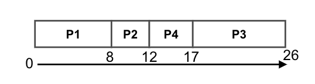
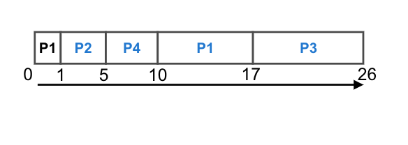
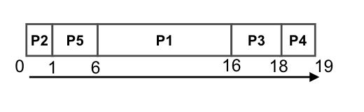
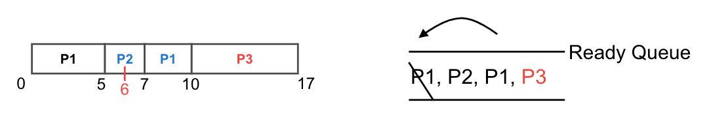
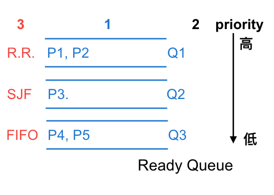
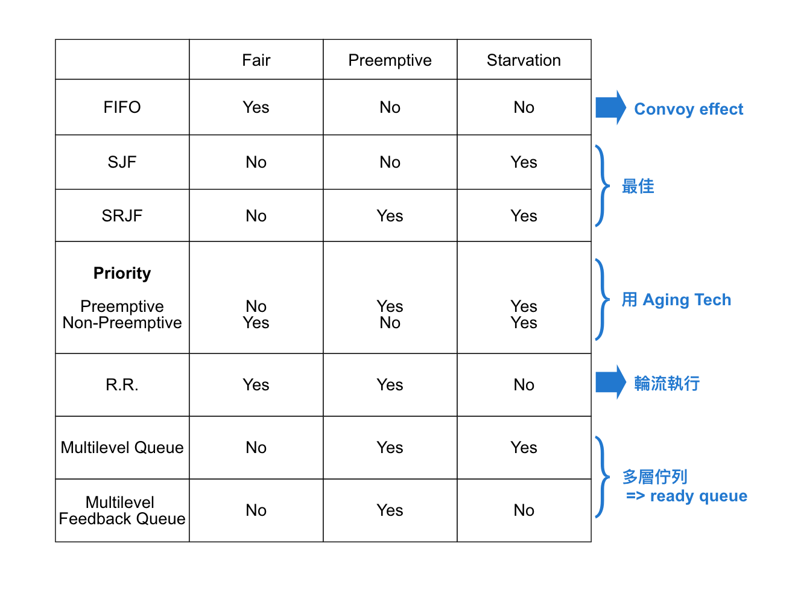

<!DOCTYPE html>
<html lang=zh>
<head>
    <!-- so meta -->
    <meta charset="utf-8">
    <meta http-equiv="X-UA-Compatible" content="IE=edge">
    <meta name="HandheldFriendly" content="True">
    <meta name="viewport" content="width=device-width, initial-scale=1, maximum-scale=5" />
    <meta name="description" content="3.4 行程 目錄  Process Definition Program vs Process Process STD PCB, context switching CPU Scheduling algorithm Thread 執行緒   CPU Scheduling algorithms &#x3D;&gt; 針對 STS 從 Ready Queue 挑出一 process 獲得 CPU 之挑選策略方">
<meta property="og:type" content="article">
<meta property="og:title" content="Chapter3-作業系統-行程-part2">
<meta property="og:url" content="https://pingjing0628.github.io/2021/06/12/Chapter3-%E4%BD%9C%E6%A5%AD%E7%B3%BB%E7%B5%B1-%E8%A1%8C%E7%A8%8B-part2/">
<meta property="og:site_name" content="PinJing&#39;s Blog">
<meta property="og:description" content="3.4 行程 目錄  Process Definition Program vs Process Process STD PCB, context switching CPU Scheduling algorithm Thread 執行緒   CPU Scheduling algorithms &#x3D;&gt; 針對 STS 從 Ready Queue 挑出一 process 獲得 CPU 之挑選策略方">
<meta property="og:locale" content="zh_TW">
<meta property="og:image" content="https://pingjing0628.github.io/2021/06/12/Chapter3-%E4%BD%9C%E6%A5%AD%E7%B3%BB%E7%B5%B1-%E8%A1%8C%E7%A8%8B-part2/%E6%B5%81%E7%A8%8B.png">
<meta property="og:image" content="https://pingjing0628.github.io/2021/06/12/Chapter3-%E4%BD%9C%E6%A5%AD%E7%B3%BB%E7%B5%B1-%E8%A1%8C%E7%A8%8B-part2/exSJF.png">
<meta property="og:image" content="https://pingjing0628.github.io/2021/06/12/Chapter3-%E4%BD%9C%E6%A5%AD%E7%B3%BB%E7%B5%B1-%E8%A1%8C%E7%A8%8B-part2/exSRJF.png">
<meta property="og:image" content="https://pingjing0628.github.io/2021/06/12/Chapter3-%E4%BD%9C%E6%A5%AD%E7%B3%BB%E7%B5%B1-%E8%A1%8C%E7%A8%8B-part2/expriority.png">
<meta property="og:image" content="https://pingjing0628.github.io/2021/06/12/Chapter3-%E4%BD%9C%E6%A5%AD%E7%B3%BB%E7%B5%B1-%E8%A1%8C%E7%A8%8B-part2/exRR.png">
<meta property="og:image" content="https://pingjing0628.github.io/2021/06/12/Chapter3-%E4%BD%9C%E6%A5%AD%E7%B3%BB%E7%B5%B1-%E8%A1%8C%E7%A8%8B-part2/multilevelQueue.png">
<meta property="og:image" content="https://pingjing0628.github.io/2021/06/12/Chapter3-%E4%BD%9C%E6%A5%AD%E7%B3%BB%E7%B5%B1-%E8%A1%8C%E7%A8%8B-part2/summary.png">
<meta property="article:published_time" content="2021-06-12T15:33:58.000Z">
<meta property="article:modified_time" content="2022-09-19T12:54:56.858Z">
<meta property="article:author" content="PinJing Wang">
<meta property="article:tag" content="O.S">
<meta property="article:tag" content="Process">
<meta property="article:tag" content="CPU Scheduling">
<meta property="article:tag" content="algorithm">
<meta name="twitter:card" content="summary">
<meta name="twitter:image" content="https://pingjing0628.github.io/2021/06/12/Chapter3-%E4%BD%9C%E6%A5%AD%E7%B3%BB%E7%B5%B1-%E8%A1%8C%E7%A8%8B-part2/%E6%B5%81%E7%A8%8B.png">
    
    
      
        
          <link rel="shortcut icon" href="/images/favicon.ico">
        
      
      
        
          <link rel="icon" type="image/png" href="/images/favicon-192x192.png" sizes="192x192">
        
      
      
        
          <link rel="apple-touch-icon" sizes="180x180" href="/images/apple-touch-icon.png">
        
      
    
    <!-- title -->
    <title>Chapter3-作業系統-行程-part2</title>
    <!-- styles -->
    
<link rel="stylesheet" href="/css/style.css">

    <!-- persian styles -->
    
    <!-- rss -->
    
    
	<!-- mathjax -->
	
		<script type="text/x-mathjax-config">
		  MathJax.Hub.Config({
			tex2jax: {
			  skipTags: ['script', 'noscript', 'style', 'textarea', 'pre'],
			  inlineMath: [['$','$']]
			}
		  });
		</script>
		<script src='https://cdnjs.cloudflare.com/ajax/libs/mathjax/2.7.5/latest.js?config=TeX-MML-AM_CHTML' async></script>
	
<meta name="generator" content="Hexo 4.2.1"><link rel="alternate" href="/atom.xml" title="PinJing's Blog" type="application/atom+xml">
</head>

<body class="max-width mx-auto px3 ltr">
    
      <div id="header-post">
  <a id="menu-icon" href="#" aria-label="Menu"><i class="fas fa-bars fa-lg"></i></a>
  <a id="menu-icon-tablet" href="#" aria-label="Menu"><i class="fas fa-bars fa-lg"></i></a>
  <a id="top-icon-tablet" href="#" "Top" onclick="$('html, body').animate({ scrollTop: 0 }, 'fast');" style="display:none;"><i class="fas fa-chevron-up fa-lg"></i></a>
  <span id="menu">
    <span id="nav">
      <ul>
         
          <li><a href="/">Home</a></li>
         
          <li><a href="/about/">About</a></li>
         
          <li><a href="/archives/">Articles</a></li>
         
          <li><a href="/categories">Categories</a></li>
         
          <li><a href="/tags">Tags</a></li>
         
          <li><a href="/search/">Search</a></li>
        
      </ul>
    </span>
    <br/>
    <span id="actions">
      <ul>
        
        <li><a class="icon" aria-label="Previous post " href="/2021/06/12/Chapter3-%E4%BD%9C%E6%A5%AD%E7%B3%BB%E7%B5%B1-%E8%A1%8C%E7%A8%8B-part3/"><i class="fas fa-chevron-left" aria-hidden="true" onmouseover="$('#i-prev').toggle();" onmouseout="$('#i-prev').toggle();"></i></a></li>
        
        
        <li><a class="icon" aria-label="Next post " href="/2021/06/12/Chapter3-%E4%BD%9C%E6%A5%AD%E7%B3%BB%E7%B5%B1-%E8%A1%8C%E7%A8%8B-part1/"><i class="fas fa-chevron-right" aria-hidden="true" onmouseover="$('#i-next').toggle();" onmouseout="$('#i-next').toggle();"></i></a></li>
        
        <li><a class="icon" aria-label="Back to top " href="#" onclick="$('html, body').animate({ scrollTop: 0 }, 'fast');"><i class="fas fa-chevron-up" aria-hidden="true" onmouseover="$('#i-top').toggle();" onmouseout="$('#i-top').toggle();"></i></a></li>
        <li><a class="icon" aria-label="Share post " href="#"><i class="fas fa-share-alt" aria-hidden="true" onmouseover="$('#i-share').toggle();" onmouseout="$('#i-share').toggle();" onclick="$('#share').toggle();return false;"></i></a></li>
      </ul>
      <span id="i-prev" class="info" style="display:none;">Previous post</span>
      <span id="i-next" class="info" style="display:none;">Next post</span>
      <span id="i-top" class="info" style="display:none;">Back to top</span>
      <span id="i-share" class="info" style="display:none;">Share post</span>
    </span>
    <br/>
    <div id="share" style="display: none">
      <ul>
  <li><a class="icon" href="http://www.facebook.com/sharer.php?u=https://pingjing0628.github.io/2021/06/12/Chapter3-%E4%BD%9C%E6%A5%AD%E7%B3%BB%E7%B5%B1-%E8%A1%8C%E7%A8%8B-part2/" target="_blank" rel="noopener"><i class="fab fa-facebook " aria-hidden="true"></i></a></li>
  <li><a class="icon" href="https://twitter.com/share?url=https://pingjing0628.github.io/2021/06/12/Chapter3-%E4%BD%9C%E6%A5%AD%E7%B3%BB%E7%B5%B1-%E8%A1%8C%E7%A8%8B-part2/&text=Chapter3-作業系統-行程-part2" target="_blank" rel="noopener"><i class="fab fa-twitter " aria-hidden="true"></i></a></li>
  <li><a class="icon" href="http://www.linkedin.com/shareArticle?url=https://pingjing0628.github.io/2021/06/12/Chapter3-%E4%BD%9C%E6%A5%AD%E7%B3%BB%E7%B5%B1-%E8%A1%8C%E7%A8%8B-part2/&title=Chapter3-作業系統-行程-part2" target="_blank" rel="noopener"><i class="fab fa-linkedin " aria-hidden="true"></i></a></li>
  <li><a class="icon" href="https://pinterest.com/pin/create/bookmarklet/?url=https://pingjing0628.github.io/2021/06/12/Chapter3-%E4%BD%9C%E6%A5%AD%E7%B3%BB%E7%B5%B1-%E8%A1%8C%E7%A8%8B-part2/&is_video=false&description=Chapter3-作業系統-行程-part2" target="_blank" rel="noopener"><i class="fab fa-pinterest " aria-hidden="true"></i></a></li>
  <li><a class="icon" href="mailto:?subject=Chapter3-作業系統-行程-part2&body=Check out this article: https://pingjing0628.github.io/2021/06/12/Chapter3-%E4%BD%9C%E6%A5%AD%E7%B3%BB%E7%B5%B1-%E8%A1%8C%E7%A8%8B-part2/"><i class="fas fa-envelope " aria-hidden="true"></i></a></li>
  <li><a class="icon" href="https://getpocket.com/save?url=https://pingjing0628.github.io/2021/06/12/Chapter3-%E4%BD%9C%E6%A5%AD%E7%B3%BB%E7%B5%B1-%E8%A1%8C%E7%A8%8B-part2/&title=Chapter3-作業系統-行程-part2" target="_blank" rel="noopener"><i class="fab fa-get-pocket " aria-hidden="true"></i></a></li>
  <li><a class="icon" href="http://reddit.com/submit?url=https://pingjing0628.github.io/2021/06/12/Chapter3-%E4%BD%9C%E6%A5%AD%E7%B3%BB%E7%B5%B1-%E8%A1%8C%E7%A8%8B-part2/&title=Chapter3-作業系統-行程-part2" target="_blank" rel="noopener"><i class="fab fa-reddit " aria-hidden="true"></i></a></li>
  <li><a class="icon" href="http://www.stumbleupon.com/submit?url=https://pingjing0628.github.io/2021/06/12/Chapter3-%E4%BD%9C%E6%A5%AD%E7%B3%BB%E7%B5%B1-%E8%A1%8C%E7%A8%8B-part2/&title=Chapter3-作業系統-行程-part2" target="_blank" rel="noopener"><i class="fab fa-stumbleupon " aria-hidden="true"></i></a></li>
  <li><a class="icon" href="http://digg.com/submit?url=https://pingjing0628.github.io/2021/06/12/Chapter3-%E4%BD%9C%E6%A5%AD%E7%B3%BB%E7%B5%B1-%E8%A1%8C%E7%A8%8B-part2/&title=Chapter3-作業系統-行程-part2" target="_blank" rel="noopener"><i class="fab fa-digg " aria-hidden="true"></i></a></li>
  <li><a class="icon" href="http://www.tumblr.com/share/link?url=https://pingjing0628.github.io/2021/06/12/Chapter3-%E4%BD%9C%E6%A5%AD%E7%B3%BB%E7%B5%B1-%E8%A1%8C%E7%A8%8B-part2/&name=Chapter3-作業系統-行程-part2&description=" target="_blank" rel="noopener"><i class="fab fa-tumblr " aria-hidden="true"></i></a></li>
  <li><a class="icon" href="https://news.ycombinator.com/submitlink?u=https://pingjing0628.github.io/2021/06/12/Chapter3-%E4%BD%9C%E6%A5%AD%E7%B3%BB%E7%B5%B1-%E8%A1%8C%E7%A8%8B-part2/&t=Chapter3-作業系統-行程-part2" target="_blank" rel="noopener"><i class="fab fa-hacker-news " aria-hidden="true"></i></a></li>
</ul>

    </div>
    <div id="toc">
      <ol class="toc"><li class="toc-item toc-level-1"><a class="toc-link" href="#"><span class="toc-number">1.</span> <span class="toc-text">3.4 行程</span></a><ol class="toc-child"><li class="toc-item toc-level-2"><a class="toc-link" href="#"><span class="toc-number">1.1.</span> <span class="toc-text">目錄</span></a></li><li class="toc-item toc-level-2"><a class="toc-link" href="#"><span class="toc-number">1.2.</span> <span class="toc-text">CPU Scheduling algorithms</span></a></li></ol></li></ol>
    </div>
  </span>
</div>

    
    <div class="content index py4">
        
        <article class="post" itemscope itemtype="http://schema.org/BlogPosting">
  <header>
    
    <h1 class="posttitle" itemprop="name headline">
        Chapter3-作業系統-行程-part2
    </h1>


    <div class="meta">
      <span class="author" itemprop="author" itemscope itemtype="http://schema.org/Person">
        <span itemprop="name">PinJing Wang</span>
      </span>
      
    <div class="postdate">
      
        <time datetime="2021-06-12T15:33:58.000Z" itemprop="datePublished">2021-06-12</time>
        
      
    </div>


      
    <div class="article-category">
        <i class="fas fa-archive"></i>
        <a class="category-link" href="/categories/Note/">Note</a> › <a class="category-link" href="/categories/Note/%E8%A8%88%E7%AE%97%E6%A9%9F%E6%A6%82%E8%AB%96/">計算機概論</a> › <a class="category-link" href="/categories/Note/%E8%A8%88%E7%AE%97%E6%A9%9F%E6%A6%82%E8%AB%96/%E4%BD%9C%E6%A5%AD%E7%B3%BB%E7%B5%B1/">作業系統</a>
    </div>


      
    <div class="article-tag">
        <i class="fas fa-tag"></i>
        <a class="tag-link" href="/tags/CPU-Scheduling/" rel="tag">CPU Scheduling</a>, <a class="tag-link" href="/tags/O-S/" rel="tag">O.S</a>, <a class="tag-link" href="/tags/Process/" rel="tag">Process</a>, <a class="tag-link" href="/tags/algorithm/" rel="tag">algorithm</a>
    </div>


    </div>
  </header>
  

  <div class="content" itemprop="articleBody">
    <h1>3.4 行程</h1>
<h2>目錄</h2>
<ul>
<li>Process Definition</li>
<li>Program vs Process</li>
<li>Process STD</li>
<li>PCB, context switching</li>
<li><strong>CPU Scheduling algorithm</strong></li>
<li>Thread 執行緒</li>
</ul>
<hr>
<h2>CPU Scheduling algorithms</h2>
<p>=&gt; 針對 <strong>STS</strong> 從 <strong>Ready Queue</strong> 挑出一 process 獲得 CPU 之挑選策略方法</p>
<ul>
<li>FIFO</li>
<li>SJF</li>
<li>SRJF</li>
<li>Priority</li>
<li>RR</li>
<li>Multilevel Queue</li>
<li>Multilevel Feedback Queue</li>
</ul>
<hr>
<ol>
<li><strong>FIFO First-In First-Out</strong><br>
Def: 愈先到達 Ready Queue 的 process, 先獲得 CPU</li>
</ol>
<ul>
<li>
<p>Non-preemptive (不可搶奪)<br>
優點：</p>
<ul>
<li>公平性 (Fair)</li>
<li>easy to implement</li>
<li><strong>No starvation 飢餓</strong><br>
Def: 指 low priority 之 process 長期或無限期無法取得 CPU 之服務</li>
</ul>
<p>缺點：</p>
<ul>
<li>效益不佳 (因為 A.W.T &amp; A.T.T 慢)</li>
<li>會有 <strong>convoy effect (護衛效應)</strong><br>
指多個 process 在 wait 一個需長時間執行之 process =&gt; <strong>造成 A.W.T 大幅上升</strong></li>
<li>Note:<br>
A.W.T: Average Waiting time<br>
A.T.T: Average Turnaround time (結束時間)</li>
</ul>
</li>
<li>
<p>Example: CPU Scheduling algorithms 的衡量準則 (performance criteria 效能準則)<br>
Sol:</p>
<ol>
<li>CPU utilization -&gt; 看 CPU 使用率</li>
<li>CPU throughput -&gt; 看 CPU 單位生產量</li>
<li><strong>Waiting time 等候時間</strong><br>
Def: 自 process 交付系統到結束, 總共在 Ready Queue 等了多久</li>
<li><strong>Turnaround time 回覆時間</strong><br>
Def: 自 process 交付系統到結束, 總共需多少時間</li>
<li>Response time (反應)<br>
Def: 指 process 自交付系統到第一次獲得回應的時間 -&gt; <strong>interactive system care about this</strong><br>
Note: <code>1. ~ 2.</code> 愈高愈好, <code>3. ~ 5.</code>時間愈短愈好</li>
</ol>
</li>
<li>
<p>Ex: 採 FIFO,</p>
<table>
<thead>
<tr>
<th style="text-align:center">Process</th>
<th style="text-align:center">CPU Burst time (CPU 花費時間)</th>
<th style="text-align:center">CPU arrive time</th>
</tr>
</thead>
<tbody>
<tr>
<td style="text-align:center">P1</td>
<td style="text-align:center">24</td>
<td style="text-align:center">0</td>
</tr>
<tr>
<td style="text-align:center">P2</td>
<td style="text-align:center">3</td>
<td style="text-align:center">0</td>
</tr>
<tr>
<td style="text-align:center">P3</td>
<td style="text-align:center">3</td>
<td style="text-align:center">0</td>
</tr>
</tbody>
</table>
<p>Sol:<br>
A.W.T = <code>(0 + 24 + 27) / 3 = 17</code><br>
A.T.T = <code>(24 + 27 + 30) / 3 = 27</code></p>
</li>
</ul>
<ol start="2">
<li><strong>SJF (Shortest Job First) 最短工作先做</strong><br>
Def: 指所需的 CPU 時間愈短, 愈先獲得 CPU 之服務</li>
</ol>
<ul>
<li><strong>Non-preemptive</strong><br>
優點：
<ul>
<li>效益最佳 (A.W.T &amp; A.T.T 短)</li>
<li>No convoy effect</li>
<li><strong>適用於 LTS</strong>
缺點：</li>
<li>No fair</li>
<li>可能會有 <strong>starvation</strong></li>
<li>不適用於 STS (預測 process 時間耗時) -&gt; 一般拿來當理論依據值</li>
</ul>
</li>
</ul>
<ol start="3">
<li><strong>SRJF (Shortest Remaining Time Job First) 最短剩餘時間工作先做</strong><br>
Def: 同 2. , 但為 preemtpive, 且 Context Switching 較重</li>
</ol>
<ul>
<li>
<p>ex:</p>
<table>
<thead>
<tr>
<th style="text-align:center">Process</th>
<th style="text-align:center">CPU Burst time (CPU 花費時間)</th>
<th style="text-align:center">CPU arrive time</th>
</tr>
</thead>
<tbody>
<tr>
<td style="text-align:center">P1</td>
<td style="text-align:center">8</td>
<td style="text-align:center">0</td>
</tr>
<tr>
<td style="text-align:center">P2</td>
<td style="text-align:center">4</td>
<td style="text-align:center">1</td>
</tr>
<tr>
<td style="text-align:center">P3</td>
<td style="text-align:center">9</td>
<td style="text-align:center">2</td>
</tr>
<tr>
<td style="text-align:center">P4</td>
<td style="text-align:center">5</td>
<td style="text-align:center">3</td>
</tr>
</tbody>
</table>
<p>分別採 SJF &amp; SRJF, 求 A.W.T &amp; A.T.T = ?<br>

Sol:</p>
<ol>
<li>SJF<br>
<br>
A.W.T = <code>(0 - 0 + 8 - 1 + 17 - 2 + 12 - 3) / 4 = 7.75</code><br>
A.T.T = <code>(8 - 0 + 12 - 1 + 26 - 2 + 17 - 3) / 4 = 14.25</code></li>
<li>SRJF
<br>
A.W.T = <code>(0 - 0 + 10 - 1 + 1 - 1 + 17 - 2 + 5 - 3) / 4 = 6.5</code><br>
A.T.T = <code>(17 - 0 + 5 - 1 + 26 - 2 + 10 - 3) / 4 = 13</code></li>
</ol>
</li>
<li>
<p>Compare</p>
<table>
<thead>
<tr>
<th style="text-align:center">Preemptive (SRJF)</th>
<th style="text-align:center">Non-preemptive scheduling (SJF)</th>
</tr>
</thead>
<tbody>
<tr>
<td style="text-align:center">Process 取得 CPU 後, 過程可能被其他 process 將 CPU 搶走</td>
<td style="text-align:center">一旦 process 取得 CPU, 除非自願放棄, 否則其他process 不能搶</td>
</tr>
<tr>
<td style="text-align:center"><strong>適用於即時, 交談式</strong></td>
<td style="text-align:center"><strong>對 job 較公平</strong>, <strong>Reponse time 較可預期</strong></td>
</tr>
<tr>
<td style="text-align:center"><strong>Context switching 重 (缺點)</strong></td>
<td style="text-align:center"><strong>Context switching 輕 (優點)</strong></td>
</tr>
<tr>
<td style="text-align:center"><strong>A.W.T &amp; A.T.T 短 (優點)</strong></td>
<td style="text-align:center"><strong>A.W.T &amp; A.T.T 長 (缺點)</strong></td>
</tr>
</tbody>
</table>
</li>
</ul>
<ol start="4">
<li><strong>Priority Scheduling (優先權排列法則)</strong><br>
Def: priority 愈高者, 愈先取得 CPU 之服務</li>
</ol>
<ul>
<li>Special case:
<ol>
<li>Arrive time 越短, Priority 越高 =&gt; FIFO</li>
<li>CPU Burst time 越短, Priority 越高 =&gt; SJF</li>
</ol>
</li>
<li>又可分為：
<ul>
<li>Preemptive =&gt; 易造成 starvation
<ul>
<li><strong>Solution: 採 &quot;Aging Technique&quot; (老化技術)</strong><br>
Def: 指每隔一段時間逐步將 low priority 之 process 的 優先權提高</li>
</ul>
</li>
<li>Non-preemptive =&gt; 當 priority 相同 =&gt; 採 FIFO</li>
</ul>
</li>
<li>Ex: 採 priority 求 A.W.T &amp; A.T.T ?
<table>
<thead>
<tr>
<th style="text-align:center">Process</th>
<th style="text-align:center">CPU Burst time (CPU 花費時間)</th>
<th style="text-align:center">Priority (編號小, priority 高)</th>
</tr>
</thead>
<tbody>
<tr>
<td style="text-align:center">P1</td>
<td style="text-align:center">10</td>
<td style="text-align:center">3 No.3</td>
</tr>
<tr>
<td style="text-align:center">P2</td>
<td style="text-align:center">1</td>
<td style="text-align:center">1 No.2</td>
</tr>
<tr>
<td style="text-align:center">P3</td>
<td style="text-align:center">2</td>
<td style="text-align:center">3 No.4</td>
</tr>
<tr>
<td style="text-align:center">P4</td>
<td style="text-align:center">1</td>
<td style="text-align:center">4 No.5</td>
</tr>
<tr>
<td style="text-align:center">P5</td>
<td style="text-align:center">5</td>
<td style="text-align:center">2 No.2</td>
</tr>
</tbody>
</table>
Sol:<br>
<br>
A.W.T = <code>(6 + 0 + 16 + 18 + 1) / 5 = 8.2</code><br>
A.T.T = <code>(16 + 1 + 18 + 19 + 6) / 5 = 12</code></li>
</ul>
<ol start="5">
<li><strong>Round-Robin (R.R)</strong></li>
</ol>
<ul>
<li>
<p>Def: 指輪流給各 process 一固定時間</p>
<ul>
<li>時間到就得將 CPU 交由下一個 process 執行</li>
<li>具下列特色：
<ol>
<li>Fair</li>
<li>preemptive</li>
<li>Non-starvation</li>
</ol>
</li>
</ul>
</li>
<li>
<p>Special Case:</p>
<ol>
<li>CPU time slice (時間週期) 約等於無限 =&gt; <strong>FIFO</strong></li>
<li>CPU time slice 極小 =&gt; <strong>CPU Sharing</strong>, <strong>But Context Switching 非常重</strong></li>
</ol>
</li>
<li>
<p>Ex: 採 R.R time slice = 5, 求 A.W.T &amp; A.T.T ?</p>
<table>
<thead>
<tr>
<th style="text-align:center">Process</th>
<th style="text-align:center">CPU Burst time (CPU 花費時間)</th>
<th style="text-align:center">CPU arrive time</th>
</tr>
</thead>
<tbody>
<tr>
<td style="text-align:center">P1</td>
<td style="text-align:center">8</td>
<td style="text-align:center">0</td>
</tr>
<tr>
<td style="text-align:center">P2</td>
<td style="text-align:center">2</td>
<td style="text-align:center">3</td>
</tr>
<tr>
<td style="text-align:center">P3</td>
<td style="text-align:center">7</td>
<td style="text-align:center">6</td>
</tr>
</tbody>
</table>
<p>Sol:<br>

A.W.T = <code>(0 - 0 + 7 - 5 + 5 - 3 + 10 - 6) / 3 = 8/3</code><br>
A.T.T = <code>(10 + 7 - 3 + 17 - 6) / 3 = 25/3</code></p>
</li>
</ul>
<ol start="6">
<li><strong>Multilevel Queue (多重佇列)</strong></li>
</ol>
<ul>
<li>Def:
<ul>
<li>將 Ready Queue 拆成多個 Queue</li>
<li>Queue 之間採 preemptive priority scheduling</li>
<li>各 Queue 可採用自己的排班法則</li>
</ul>
</li>
<li>優點：可依 process 屬性將之放置到適當的位置</li>
<li>缺點：此方法下, process 無法於 Queue 之間移動, 故會有 <strong>starvation</strong> 之問題</li>
<li>圖：</li>
</ul>
<ol start="7">
<li><strong>Multilevel Feedback Queue (多層回饋佇列)</strong><br>
Def: 同 6. , 但 <strong>process 可於 Queue 之間挪動</strong><br>
策略：
<ol>
<li>於下層的 process 每隔一段時間往上一層移動</li>
<li>於上層的 process 不需 CPU 時逐步往下層移動</li>
</ol>
</li>
</ol>
<hr>
<ul>
<li>Summary
</li>
</ul>

  </div>
</article>


        
          <div id="footer-post-container">
  <div id="footer-post">

    <div id="nav-footer" style="display: none">
      <ul>
         
          <li><a href="/">Home</a></li>
         
          <li><a href="/about/">About</a></li>
         
          <li><a href="/archives/">Articles</a></li>
         
          <li><a href="/categories">Categories</a></li>
         
          <li><a href="/tags">Tags</a></li>
         
          <li><a href="/search/">Search</a></li>
        
      </ul>
    </div>

    <div id="toc-footer" style="display: none">
      <ol class="toc"><li class="toc-item toc-level-1"><a class="toc-link" href="#"><span class="toc-number">1.</span> <span class="toc-text">3.4 行程</span></a><ol class="toc-child"><li class="toc-item toc-level-2"><a class="toc-link" href="#"><span class="toc-number">1.1.</span> <span class="toc-text">目錄</span></a></li><li class="toc-item toc-level-2"><a class="toc-link" href="#"><span class="toc-number">1.2.</span> <span class="toc-text">CPU Scheduling algorithms</span></a></li></ol></li></ol>
    </div>

    <div id="share-footer" style="display: none">
      <ul>
  <li><a class="icon" href="http://www.facebook.com/sharer.php?u=https://pingjing0628.github.io/2021/06/12/Chapter3-%E4%BD%9C%E6%A5%AD%E7%B3%BB%E7%B5%B1-%E8%A1%8C%E7%A8%8B-part2/" target="_blank" rel="noopener"><i class="fab fa-facebook fa-lg" aria-hidden="true"></i></a></li>
  <li><a class="icon" href="https://twitter.com/share?url=https://pingjing0628.github.io/2021/06/12/Chapter3-%E4%BD%9C%E6%A5%AD%E7%B3%BB%E7%B5%B1-%E8%A1%8C%E7%A8%8B-part2/&text=Chapter3-作業系統-行程-part2" target="_blank" rel="noopener"><i class="fab fa-twitter fa-lg" aria-hidden="true"></i></a></li>
  <li><a class="icon" href="http://www.linkedin.com/shareArticle?url=https://pingjing0628.github.io/2021/06/12/Chapter3-%E4%BD%9C%E6%A5%AD%E7%B3%BB%E7%B5%B1-%E8%A1%8C%E7%A8%8B-part2/&title=Chapter3-作業系統-行程-part2" target="_blank" rel="noopener"><i class="fab fa-linkedin fa-lg" aria-hidden="true"></i></a></li>
  <li><a class="icon" href="https://pinterest.com/pin/create/bookmarklet/?url=https://pingjing0628.github.io/2021/06/12/Chapter3-%E4%BD%9C%E6%A5%AD%E7%B3%BB%E7%B5%B1-%E8%A1%8C%E7%A8%8B-part2/&is_video=false&description=Chapter3-作業系統-行程-part2" target="_blank" rel="noopener"><i class="fab fa-pinterest fa-lg" aria-hidden="true"></i></a></li>
  <li><a class="icon" href="mailto:?subject=Chapter3-作業系統-行程-part2&body=Check out this article: https://pingjing0628.github.io/2021/06/12/Chapter3-%E4%BD%9C%E6%A5%AD%E7%B3%BB%E7%B5%B1-%E8%A1%8C%E7%A8%8B-part2/"><i class="fas fa-envelope fa-lg" aria-hidden="true"></i></a></li>
  <li><a class="icon" href="https://getpocket.com/save?url=https://pingjing0628.github.io/2021/06/12/Chapter3-%E4%BD%9C%E6%A5%AD%E7%B3%BB%E7%B5%B1-%E8%A1%8C%E7%A8%8B-part2/&title=Chapter3-作業系統-行程-part2" target="_blank" rel="noopener"><i class="fab fa-get-pocket fa-lg" aria-hidden="true"></i></a></li>
  <li><a class="icon" href="http://reddit.com/submit?url=https://pingjing0628.github.io/2021/06/12/Chapter3-%E4%BD%9C%E6%A5%AD%E7%B3%BB%E7%B5%B1-%E8%A1%8C%E7%A8%8B-part2/&title=Chapter3-作業系統-行程-part2" target="_blank" rel="noopener"><i class="fab fa-reddit fa-lg" aria-hidden="true"></i></a></li>
  <li><a class="icon" href="http://www.stumbleupon.com/submit?url=https://pingjing0628.github.io/2021/06/12/Chapter3-%E4%BD%9C%E6%A5%AD%E7%B3%BB%E7%B5%B1-%E8%A1%8C%E7%A8%8B-part2/&title=Chapter3-作業系統-行程-part2" target="_blank" rel="noopener"><i class="fab fa-stumbleupon fa-lg" aria-hidden="true"></i></a></li>
  <li><a class="icon" href="http://digg.com/submit?url=https://pingjing0628.github.io/2021/06/12/Chapter3-%E4%BD%9C%E6%A5%AD%E7%B3%BB%E7%B5%B1-%E8%A1%8C%E7%A8%8B-part2/&title=Chapter3-作業系統-行程-part2" target="_blank" rel="noopener"><i class="fab fa-digg fa-lg" aria-hidden="true"></i></a></li>
  <li><a class="icon" href="http://www.tumblr.com/share/link?url=https://pingjing0628.github.io/2021/06/12/Chapter3-%E4%BD%9C%E6%A5%AD%E7%B3%BB%E7%B5%B1-%E8%A1%8C%E7%A8%8B-part2/&name=Chapter3-作業系統-行程-part2&description=" target="_blank" rel="noopener"><i class="fab fa-tumblr fa-lg" aria-hidden="true"></i></a></li>
  <li><a class="icon" href="https://news.ycombinator.com/submitlink?u=https://pingjing0628.github.io/2021/06/12/Chapter3-%E4%BD%9C%E6%A5%AD%E7%B3%BB%E7%B5%B1-%E8%A1%8C%E7%A8%8B-part2/&t=Chapter3-作業系統-行程-part2" target="_blank" rel="noopener"><i class="fab fa-hacker-news fa-lg" aria-hidden="true"></i></a></li>
</ul>

    </div>

    <div id="actions-footer">
        <a id="menu" class="icon" href="#" onclick="$('#nav-footer').toggle();return false;"><i class="fas fa-bars fa-lg" aria-hidden="true"></i> Menu</a>
        <a id="toc" class="icon" href="#" onclick="$('#toc-footer').toggle();return false;"><i class="fas fa-list fa-lg" aria-hidden="true"></i> TOC</a>
        <a id="share" class="icon" href="#" onclick="$('#share-footer').toggle();return false;"><i class="fas fa-share-alt fa-lg" aria-hidden="true"></i> Share</a>
        <a id="top" style="display:none" class="icon" href="#" onclick="$('html, body').animate({ scrollTop: 0 }, 'fast');"><i class="fas fa-chevron-up fa-lg" aria-hidden="true"></i> Top</a>
    </div>

  </div>
</div>

        
        <footer id="footer">
  <div class="footer-left">
    Copyright &copy;
    
    
    2019-2022
    PinJing Wang
  </div>
  <div class="footer-right">
    <nav>
      <ul>
         
          <li><a href="/">Home</a></li>
         
          <li><a href="/about/">About</a></li>
         
          <li><a href="/archives/">Articles</a></li>
         
          <li><a href="/categories">Categories</a></li>
         
          <li><a href="/tags">Tags</a></li>
         
          <li><a href="/search/">Search</a></li>
        
      </ul>
    </nav>
  </div>
</footer>

    </div>
    <!-- styles -->


  <link rel="preload" as="style" href="https://cdnjs.cloudflare.com/ajax/libs/font-awesome/5.15.2/css/all.min.css" crossorigin="anonymous" onload="this.onload=null;this.rel='stylesheet'"/>


    <!-- jquery -->
 
  <script src="https://cdnjs.cloudflare.com/ajax/libs/jquery/3.6.0/jquery.min.js" crossorigin="anonymous"></script> 


<!-- clipboard -->

  
    <script src="https://cdnjs.cloudflare.com/ajax/libs/clipboard.js/2.0.7/clipboard.min.js" crossorigin="anonymous"></script> 
  
  <script type="text/javascript">
  $(function() {
    // copy-btn HTML
    var btn = "<span class=\"btn-copy tooltipped tooltipped-sw\" aria-label=\"Copy to clipboard!\">";
    btn += '<i class="far fa-clone"></i>';
    btn += '</span>'; 
    // mount it!
    $(".highlight table").before(btn);
    var clip = new ClipboardJS('.btn-copy', {
      text: function(trigger) {
        return Array.from(trigger.nextElementSibling.querySelectorAll('.code')).reduce((str,it)=>str+it.innerText+'\n','')
      }
    });
    clip.on('success', function(e) {
      e.trigger.setAttribute('aria-label', "Copied!");
      e.clearSelection();
    })
  })
  </script>


<script src="/js/main.js"></script>

<!-- search -->

<!-- Google Analytics -->

<!-- Baidu Analytics -->

<!-- Cloudflare Analytics -->

<!-- Umami Analytics -->

<!-- Disqus Comments -->


</body>
</html>
